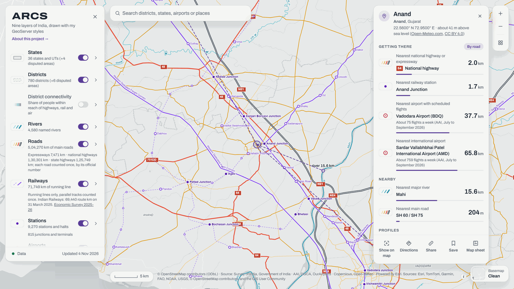
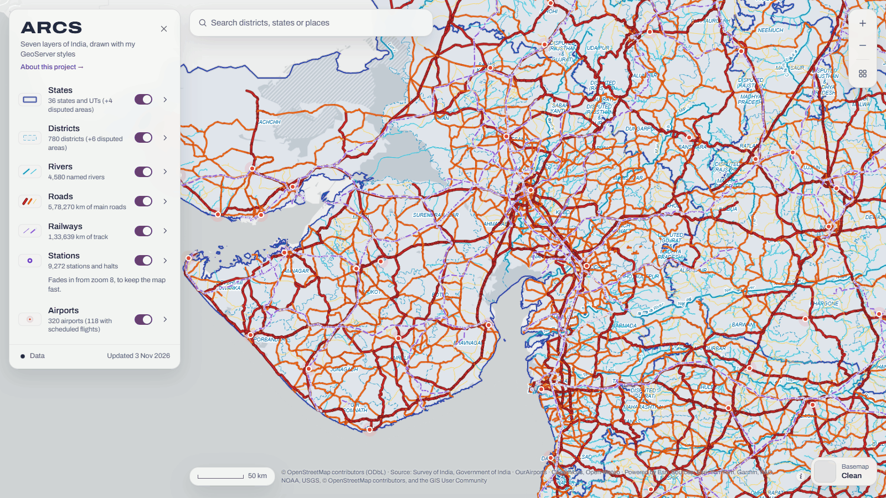
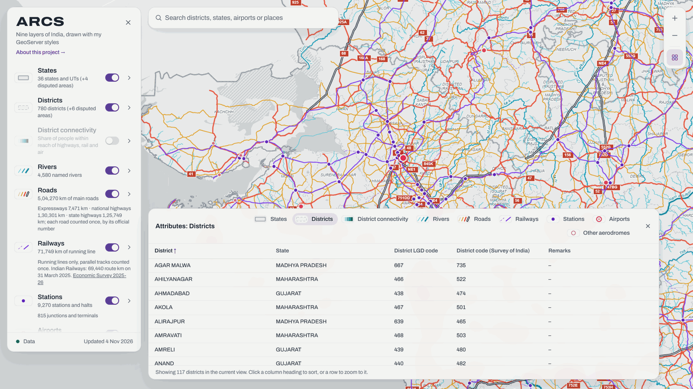

ARCS is a web GIS portal for India, built on my own PostGIS and GeoServer. Click anywhere and a place card tells you what is there and how well connected it is. Seven national layers (states, districts, rivers, roads, railways, stations and airports) are stored in PostGIS and published with GeoServer; this public map runs in your browser from files exported from them, drawn with the same styles.

Click or tap any point in India for its name (Nominatim), district, state, coordinates and elevation, and the distance to the nearest national highway or expressway, railway station, airport with scheduled flights, major river and main road. Distances are measured on the WGS84 ellipsoid, the way PostGIS measures them, and the search keeps going until the nearest feature is certain, however far away it is. By road adds driving distance and time from OSRM. Show on map, directions, share, save and map sheet buttons are on the card.
As you type, ARCS searches its own district and state names, also by old names (Gurgaon, Mysore, Hoshangabad) and with small typos. Press Enter to search OpenStreetMap places too. Picking a result zooms to it and outlines it.
When the click lands on a feature, the card adds its attributes as one line you can open, and outlines it on the map.
The features in view (up to 200), without geometry so it stays fast. Click a column heading to sort, or a row to zoom to that feature.
Saves the view as a PNG with a title, legend, scale bar, north arrow and credits, and the place card when one is open.
Only search, the layer key, zoom, the basemap button, the scale bar and the credits stay on the map. Measuring, the attribute table, drawing, saved places, map sheets, copy link, back to all of India, light or dark, and keyboard shortcuts sit under one Tools button. On phones the place card slides up from the bottom.
Five Esri basemaps (Clean, Imagery, Topographic, Streets and an OpenStreetMap style), with live previews, a divider to compare two of them side by side, and greyscale and opacity controls. India's boundary, from the Survey of India, is always drawn on top.
I prepared the original ARCS 1.0 layers in QGIS, loaded them into PostGIS with pgAdmin, and published them on GeoServer. The web map, the 2.x data updates and the serverless web edition were built with AI coding tools (Claude Code); I chose the features and data sources, and reviewed and tested the results.
Source: Survey of India, Government of India. The 2020 Administrative Boundary Database (metadata dated 16 October 2025), in both editions: 36 states and UTs (+4 disputed areas) and 780 districts (+6 disputed areas; why the two differ). Two district names follow the official district list of November 2026: Bengaluru South (formerly Rāmanagara) and Y.S.R. Kadapa. The web edition draws simplified borders to keep its files small; the place card looks up the full-detail boundaries.
© OpenStreetMap contributors, under the ODbL 1.0, from the Geofabrik India extract with data to 1 November 2026: motorway, trunk, primary and secondary roads, railway track, named stations and halts (without metro, monorail and tram stops), and named rivers. Station renamings follow official notices, such as Shree Siddharoodha Swamiji Hubballi.
Official civil airports only (150): aerodromes with a DGCA public-use licence, civil enclaves at defence airfields listed in eAIP India (AIRAC November 2026), and airports with passengers in AAI’s traffic statistics. Names are the eAIP’s, exactly; where two airports serve one city, the others show their locality in brackets, for example Hyderabad International Airport (Begumpet), and searching “Hyderabad airport” lists Rajiv Gandhi International first. Coordinates and IATA codes from OurAirports (public domain, 2 November 2026). An airport has scheduled flights (130) when it has scheduled airline departures. DGCA’s Winter 2026 schedule could not be read (its files returned 404 on 3 November 2026), so ARCS counts an airport when AAI recorded at least 100 passengers in at least 3 of the 12 months from October 2025 to September 2026, or in every month since it opened, and leaves out Juhu, HAL Bengaluru and Begumpet, whose traffic is business and general aviation only (the eAIP says so for Juhu and HAL; AAI’s figures show about 3 to 4 passengers per aircraft movement at all three).
Elevation from the Copernicus DEM GLO-90 (WorldDEM-90, the 2021 release that Open-Meteo serves) through the Open-Meteo.com elevation API (CC BY 4.0), and place names from Nominatim (© OpenStreetMap contributors), looked up at each click.
Every source, with the date it was read (ARCS 2.3, 3 November 2026 unless shown):


What ARCS could not confirm from an official source, checked on 3 November 2026. Each will be corrected when the source is available.
When you click the map, ARCS sends that point to Nominatim for the place name and to Open-Meteo for elevation, and, if you press By road, to OSRM. Your browser also loads map tiles from Esri, fonts from Google Fonts and code from jsDelivr. ARCS has no tracking and no cookies; saved places stay in your browser.
Code and design. The ARCS code, styles and page design are © 2026 Kolacha Hetkumar, all rights reserved: they can be viewed, but not copied, reused or redistributed without my written permission. This notice does not cover the map data.
Data. The roads, railways, stations and rivers files are © OpenStreetMap contributors, available under the Open Database License (ODbL) 1.0; ARCS extracted, filtered and corrected them, and these files stay under the ODbL. Airports are compiled from official lists of the Airports Authority of India (eAIP India and traffic statistics) and the DGCA (licensed aerodromes), with coordinates and IATA codes from OurAirports (public domain). Boundaries: Source: Survey of India, Government of India. Elevation: produced using Copernicus WorldDEM™-90 © DLR e.V. 2010-2014 and © Airbus Defence and Space GmbH 2014-2018 provided under COPERNICUS by the European Union and ESA; all rights reserved. The organisations in charge of the Copernicus programme by law or by delegation do not incur any liability for any use of the Copernicus WorldDEM™-90. Elevation is served by Open-Meteo.com under CC BY 4.0. See DATA_LICENSE.md.
Open the live map. It runs in your browser from files (GeoJSON and PMTiles vector tiles) built from the sources above on 3 November 2026, and draws them with the same GeoServer styles. To see the GeoServer edition running on my own GeoServer, email me at 202519006@dau.ac.in.